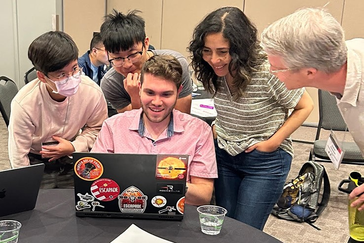

Courses

-
Fall
2021EPS150 – Case Studies in Earth Systems -
Spring
2021EPS50 – The Planet Earth -
Spring
2020PHYS121 – Fundamentals of Physics I -
Fall
2019ASTR310 – Observational Astronomy -
Fall
2019PHYS161– General Physics -
Spring
2019PHYS205: Developing Essential Research Skills -
Summer
2018UMD Physics Summer Girls Outreach Program
Student Mentoring
-
2025 - Present
Yuqi Zhang (Junior Undergraduate Student)
-
Summer
2025Joseph Byrnes (Junior Undergraduate Student) -
Summer
2024Danny Sun (Graduate Student) -
Summer
2023Elyas Ahmed (Sophomore Undergraduate Student) -
Summer
2022Kyla Giron (Sophomore Undergraduate Student)
Workshops
-
Summer
2023Mini Workshop - Solar Wind at 1 AU -
Spring
2020UMD SPS Group Meeting: Python Basics -
Summer
2019Python Basics & Visualization: One-Body Problem -
Summer
2018Arduino Botany: Monitoring Plant Growth with Microcontrollers